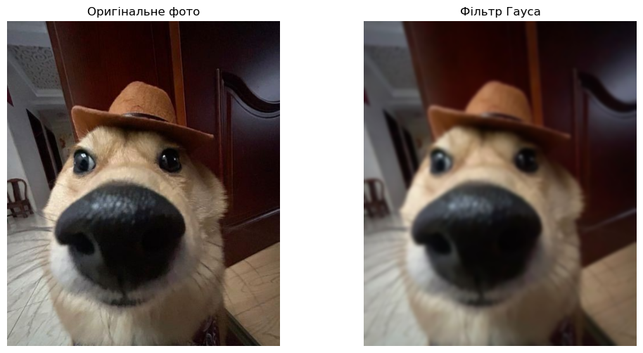
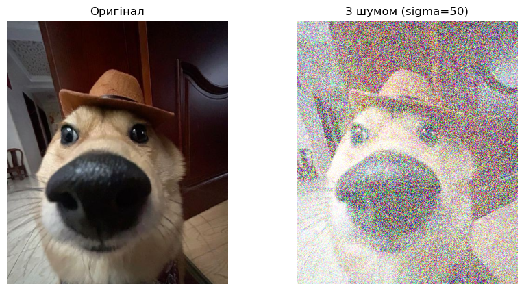

Тема: OpenCV. Просторові методи обробки зображень. Робота з околом. Просторова фільтрація зображення (short version)
Мета: знайомство з просторовими методами фільтрації зображень засобами OpenCV у середовищі Anaconda із застосуванням Jupyter Notebook засобами мови програмування Python.
import cv2import numpy as npimport matplotlib.pyplot as pltfilename ='scr/123.jpg'image = cv2.imread(filename)if image isNone:print(f"Помилка: Не вдалося знайти файл {filename}")else: gaussian_blur = cv2.GaussianBlur(image, (15, 15), 0) plt.figure(figsize=(12, 6)) plt.subplot(1, 2, 1)iflen(image.shape) ==3: plt.imshow(cv2.cvtColor(image, cv2.COLOR_BGR2RGB))else: plt.imshow(image, cmap='gray') plt.title("Оригінальне фото") plt.axis('off') plt.subplot(1, 2, 2)iflen(gaussian_blur.shape) ==3: plt.imshow(cv2.cvtColor(gaussian_blur, cv2.COLOR_BGR2RGB))else: plt.imshow(gaussian_blur, cmap='gray') plt.title("Фільтр Гауса") plt.axis('off') plt.show()

Формула: Фільтрація Гауса використовує двовимірний гаусівський розподіл для розрахунку коефіцієнтів ядра згортки. Значення кожного пікселя обчислюється за формулою:
Написати процедуру, яка б зашумлювала нормальним шумом з параметрами зображення
import cv2import numpy as npimport matplotlib.pyplot as pltdef add_gaussian_noise(image, mean=0, sigma=25): noise = np.random.normal(mean, sigma, image.shape).astype('uint8') noisy_image = cv2.add(image, noise)return noisy_imageimg = cv2.imread('scr/123.jpg') if img isnotNone: noisy_img = add_gaussian_noise(img, mean=0, sigma=50) plt.figure(figsize=(10, 5)) plt.subplot(1, 2, 1) plt.imshow(cv2.cvtColor(img, cv2.COLOR_BGR2RGB)) plt.title("Оригінал") plt.axis('off') plt.subplot(1, 2, 2) plt.imshow(cv2.cvtColor(noisy_img, cv2.COLOR_BGR2RGB)) plt.title(f"З шумом (sigma=50)") plt.axis('off') plt.show()else:print("Зображення не знайдено. Перевірте шлях до файлу.")

Реалізувати медіанний фільтр і продемонструвати послідовно роботу медіанного і гаусового фільтру, оптимально підібравши і обґрунтувавши значення параметрів
Для демонстрації було обрано параметр ядра \(k=5\).
Чому не \(k=3\)? При сильному шумі (наприклад, \(\sigma=40\)) вікно \(3\times3\) є замалим. Воно не захоплює достатньо “чистих” пікселів, щоб статистично перекрити шум, тому зернистість залишається.
Чому не \(k=7\) і більше? Завелике ядро призводить до агресивного розмиття. Гаус перетворить об’єкт на пляму, а медіанний фільтр зробить зображення схожим на “пластиковий” малюнок, знищивши текстуру об’єкту.
Чому Медіана краща за Гауса?
Гаус — це усереднення. Він бере яскраву точку шуму і “розмазує” її по сусідніх пікселях. Шум стає менш яскравим, але перетворюється на плями.
Медіана — це вибір. Вона сортує пікселі у вікні та обирає середній. Оскільки шум — це екстремальне значення (дуже біле або дуже чорне), він опиняється в кінці списку сортування і просто ігнорується. Тому краї об’єктів залишаються чіткими.
Написати процедуру, до складу якої б входили всі низькочастотні фільтри, які досліджуються в цій лабораторній роботі, а вибір потрібного задавався відповідним вхідним параметром.
Сенс градаційних перетворень полягає у зміні значень інтенсивності (яскравості) пікселів зображення за допомогою певної функції перетворення.
Це точкові операції (робота з околом \(1 \times 1\)), що означає, що нове значення пікселя \(s\) залежить виключно від його початкового значення \(r\) згідно з формулою \(s = T(r)\).
Приклади таких перетворень включають:
Негатив.
Логарифмічні та степеневі (гамма) перетворення.
Соляризацію.
2. На чому ґрунтуються гістограмні методи?
Гістограмні методи ґрунтуються на аналізі гістограми зображення — графіка, що відображає статистичний розподіл кількості пікселів для кожного рівня яскравості.
Ці методи використовують глобальну інформацію про зображення для:
Покращення контрасту: Наприклад, еквалізація гістограми “розтягує” діапазон яскравостей.
Сегментації: Оцінка гістограми дозволяє знайти оптимальний поріг для бінаризації (розділення об’єкта і фону).